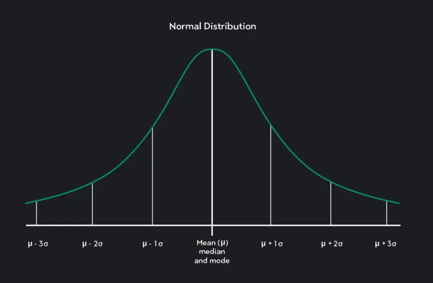

Distribution of the probability of all possible outcomes of a random variable
Arrangement of the events and their corresponding probabilities in a tabular form
In a family of 4 children at a community, what is the distribution of the number of boys?
| \(X\) | 0 | 1 | 2 | 3 | 4 |
|---|---|---|---|---|---|
| \(P(x)\) | 0.413 | 0.236 | 0.211 | 0.090 | 0.05 |
Random Variable: A variable represents outcomes of a random process, that can either be discrete or continous.
Probability Distributions: Describes how probability is distributed over possible outcomes.
Probability Mass Function: This is the given probability that a discrete random variable is exactly equal to some value, and is used with discrete random variables
Probability Density Function: This is the given probability of a random variable falling within a specific range of values, rather than a single value. It is used for continuous random variables.
Cumulative Distribution Function: This is the probability that a random variable takes a value less that or equal to a certain value. It is the cumulative sum of probabilities for discrete variables and the integral of the PDF for continuous variables.
Expected Value: This is the long run average of outcomes of a random variable. Which is also the average of all possible values that the random variable can take.
\[ P(X=x) = {n\choose x}p^x(1-p)^{n-x} \\ X = 1,2,3,\cdots, n \]
The total number of successes \(X\) is a binomial variable with parameters \(n\) and \(p\).
\[ \mu = np \\ \sigma = np(1-p) \]
A drug is known to have a 90% success rate in curing a disease. A doctor treats 20 patients and wants to know the probability that exactly 18 patients will be cured.
Suppose the probability of a positive result for a genetic disorder is 0.1, and 15 individuals are tested. What is the probability that exactly 3 individuals test positive?
Distribution of a given variable \(X\) with parameter \(\lambda\), the average number of occurrences of an event in a given space, time or volume.
Discrete events are observed in a continuous interval of time, space and volume.
Occurrence of events is random (space or time)
Probability of occurrence very small
Trial size is large
Events are rare
\[ f(x) = P(X=x) = \frac{e^{-\lambda}\lambda^x}{x!} \]
Used for rare events
Used when the distribution are counts
The mean and variance are the same, that is \(\lambda = \sigma^2\)
If on average 4 patients experience a heart attack in a hospital per day, the Poisson distribution can model the probability of having exactly 6 heart attacks in a given day.
On average, a hospital records 2 cases of hospital-acquired infections per week. What is the probability that there will be 5 such infections in a particular week?
Also known as Gaussian Distribution
It is symmetric about its mean, median and mode
It is bell shaped
mean (\(\mu\))
sigma (\(\sigma\))
It’s bell shaped
It’s symmetrical about the mean value
Determined by the mean and variance
It’s mean, median, and mode are equal
Total area under the curve is 1 (100%)
68% of total observation approximately lie within 1SD (left and right) of the mean value
95% of total observation approximately lie within 1.96SD (left and right) of the mean value
Over 99% of total observation approximately lie within 2.576SD (left and right) of the mean value.
Source: Scribbr
When \(n\) is large, the binomial distribution approximates to a normal distribution.
It is the foundation of other distributions (e.g chi-square, F-distribution, T-distribution, etc)
Normal distribution with mean 0 and standard deviation 1.
Source: Outlier
Standardizing involves subtracting each observation from the mean and diving by the standard deviation.
This process is also known as computing the z-score.
\[ z = \frac{x-\mu}{\sigma} \]